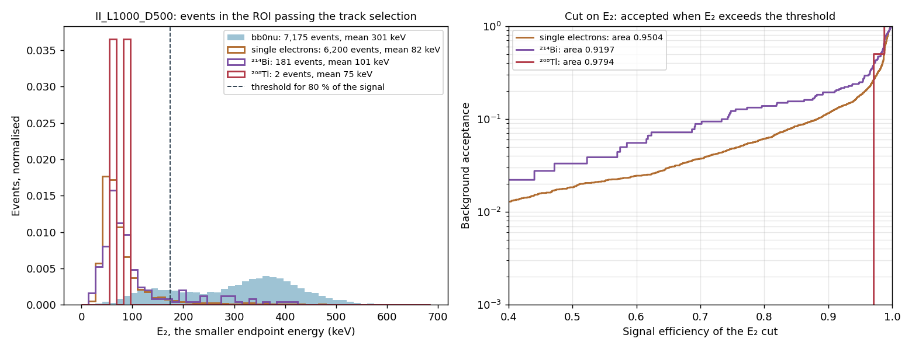

Selection
Events after each step; in brackets, the fraction of the first row. ROI: 2452.03 to 2463.63 keV.
| Step | bb0nu | single electrons | ²¹⁴Bi | ²⁰⁸Tl |
|---|---|---|---|---|
| Generated in Geant4 | 20,000 (100 %) | 20,000 (100 %) | 1,000,000 (100 %) | 1,000,000 (100 %) |
| In the input files | 16,936 (84.7 %) | 15,467 (77.3 %) | 31,746 (3.17 %) | 10,872 (1.09 %) |
| Accepted by the fast trigger | 13,463 (67.3 %) | 11,844 (59.2 %) | 4,144 (0.414 %) | 3,599 (0.36 %) |
| Event energy in the ROI | 10,192 (51 %) | 8,908 (44.5 %) | 820 (0.082 %) | 18 (0.0018 %) |
| Track selection | 7,175 (35.9 %) | 6,200 (31 %) | 181 (0.0181 %) | 2 (0.0002 %) |
Cut on the endpoint energy
E₁ ≥ E₂ are the energies in spheres of 7 mm around the two ends of the main track. An event is accepted when E₂ exceeds the threshold. Efficiencies and acceptances are fractions of the events in the ROI that pass the track selection; errors are binomial.
| Signal efficiency of the cut | Threshold on E₂ (keV) | single electrons accepted | ²¹⁴Bi accepted | ²⁰⁸Tl accepted |
|---|---|---|---|---|
| 90.0 % | 126 | 11.53 ± 0.41 % (715 of 6,200) | 19.34 ± 2.94 % (35 of 181) | 0.00 ± 0.00 % (0 of 2) |
| 80.0 % | 174 | 6.13 ± 0.30 % (380 of 6,200) | 13.81 ± 2.56 % (25 of 181) | 0.00 ± 0.00 % (0 of 2) |
| 70.0 % | 229 | 3.73 ± 0.24 % (231 of 6,200) | 8.84 ± 2.11 % (16 of 181) | 0.00 ± 0.00 % (0 of 2) |
| 60.0 % | 285 | 2.45 ± 0.20 % (152 of 6,200) | 5.52 ± 1.70 % (10 of 181) | 0.00 ± 0.00 % (0 of 2) |

Runs: II_L1000_D500_bb0nu_pilot · II_L1000_D500_single_electrons_pilot · II_L1000_D500_bi214_pilot · II_L1000_D500_tl208_pilot. Numerical results: comparison.h5.